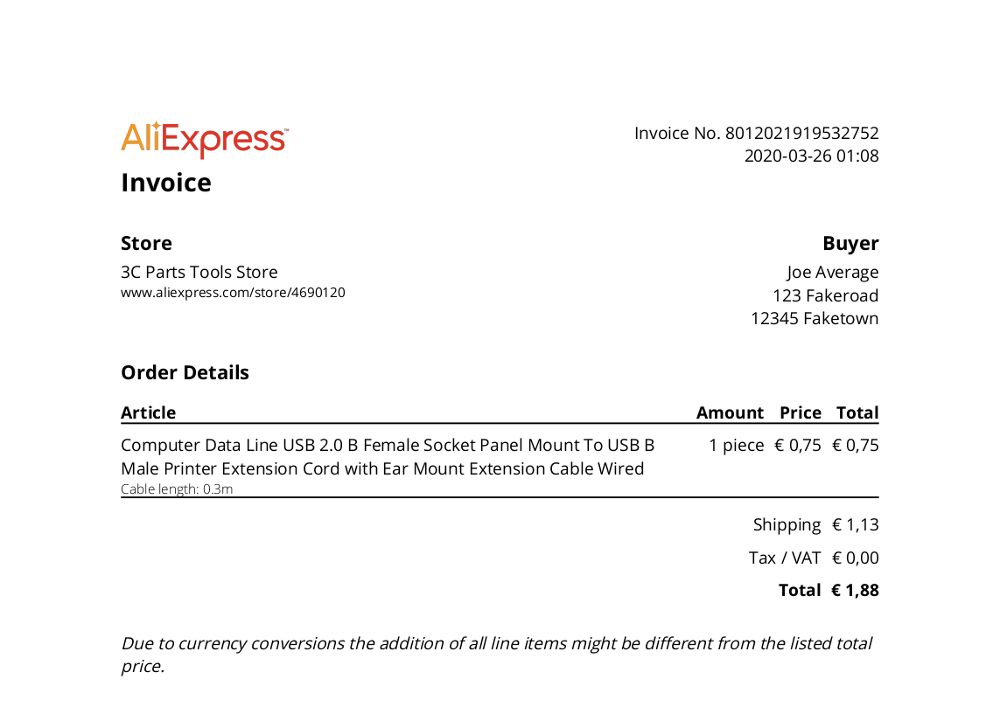

Generate PDF invoices from AliExpress with ease
Welcome to AliExpress Invoice Generator. This add-on allows you to generate PDF invoices directly from your order detail pages on aliexpress.com. Key features include:
I originally developed this add-on for my personal needs only. Many of the current features were added later, motivated by an ever growing user base and helpful feedback from like-minded people. Got an issue or an idea? Feel free to reach out.
Using the add-on is extremely easy. Go to aliexpress.com and open the details page for the order in question. Once on the page, there are two ways to generate the PDF. You can either click the page action button on the right side of the address bar (1) or the inline "PDF Invoice" button (2).

Both buttons will scrape the data from the page, generate an invoice in PDF form and then open a file saving dialog. Once saved, the PDF will look similar to this.
If you want to customise options for the PDF generation, you can do so by going to the add-on preferences.